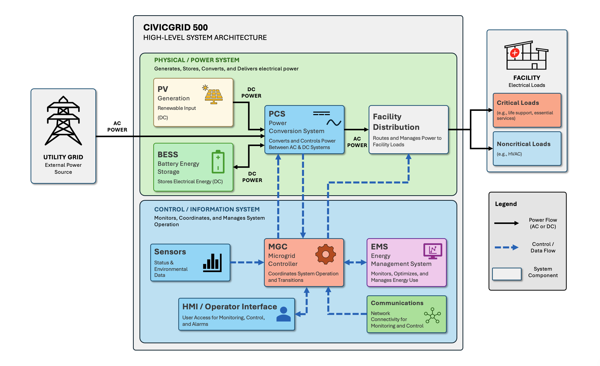

CivicGrid 500 System Architecture
CivicGrid 500 integrates energy generation, energy storage, power conversion, system control, energy management, and facility electrical distribution into a coordinated microgrid system.
Architecture Overview
CivicGrid 500 combines electrical power-generation and storage components with control and information systems to manage facility electrical loads. The architecture is organized into two conceptual layers: the physical/power system, which generates, stores, converts, and distributes electrical power; and the control/information system, which monitors conditions, coordinates system operation, and provides operator access.

System Relationships
CivicGrid 500 combines electrical power components with control and information functions to coordinate facility power. The utility grid and PV generation provide electrical inputs to the PCS, while the BESS exchanges stored electrical energy with the PCS. The PCS converts and controls electrical power before delivering AC power to facility distribution. Facility distribution routes power to critical and noncritical loads.
The control and information system monitors and coordinates these physical components. Sensors provide system and environmental information, the MGC coordinates system operation and operating transitions, and the EMS provides energy-management functions. The HMI provides operators with access to system status, monitoring, alarms, and available controls. Communications infrastructure supports information exchange among system components.
System Components
| Component | Function | Architectural Role |
|---|---|---|
| Utility Grid | Provides external AC electrical power. | External power source for grid-connected operation. |
| PV Generation | Generates electrical power from solar energy. | Renewable generation input. |
| Battery Energy Storage System (BESS) |
Stores electrical energy for later use and exchanges stored electrical energy with the Power Conversion System (PCS). |
Provides stored energy and receives energy during charging. |
| Power Conversion System (PCS) |
Converts and controls electrical power between AC and DC systems and manages power exchange between electrical system components. |
Interfaces the AC and DC portions of the power system. |
| Facility Distribution | Routes and manages electrical power to facility loads. | Distributes managed power to facility loads. |
| Microgrid Controller (MGC) |
Coordinates system-level operation and manages transitions between configured operating states. |
Provides system-level control coordination. |
| Energy Management System (EMS) | Monitors and manages energy-related information and configured energy-management functions. | Provides energy-management and monitoring functions. |
| Sensors | Provide system status and environmental information. | Supply information about physical system conditions. |
| Human Machine Interface (HMI) / Operator Interface | Provides operator access to monitoring, control, and alarms. | Provides the human interface to system information and controls. |
| Communications | Provides network connectivity among monitoring and control components. | Supports information exchange among system components. |